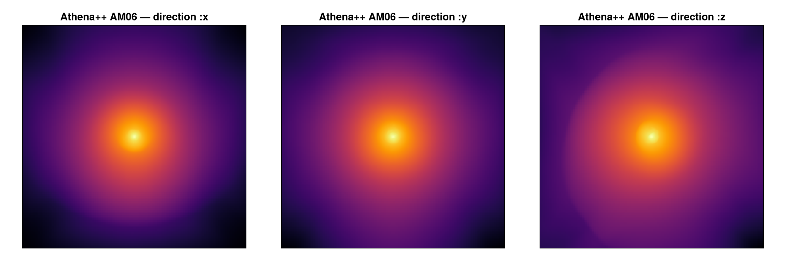
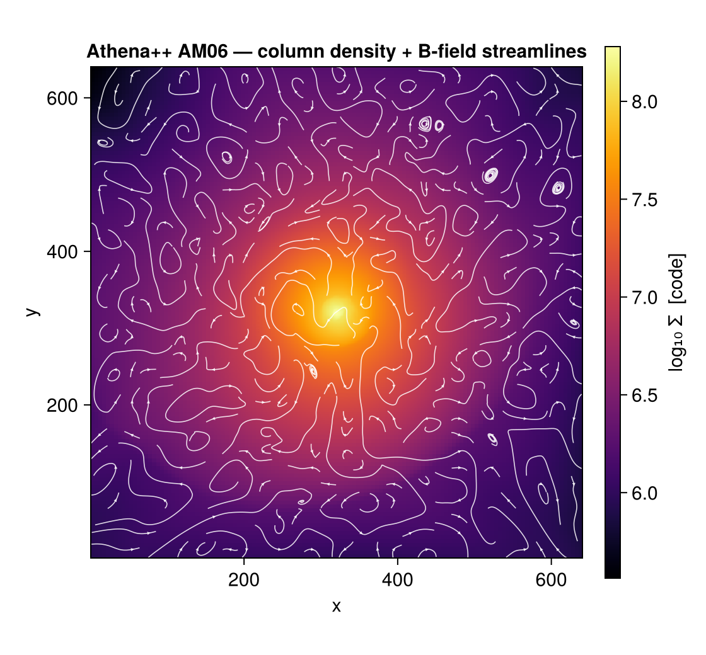
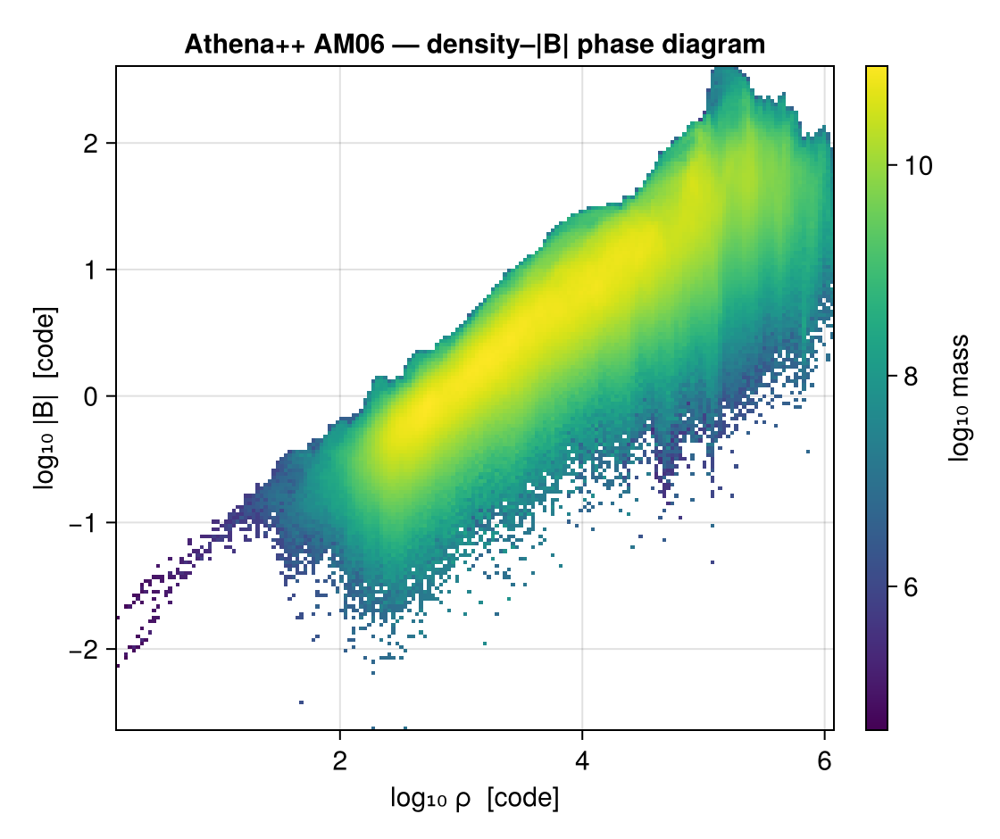
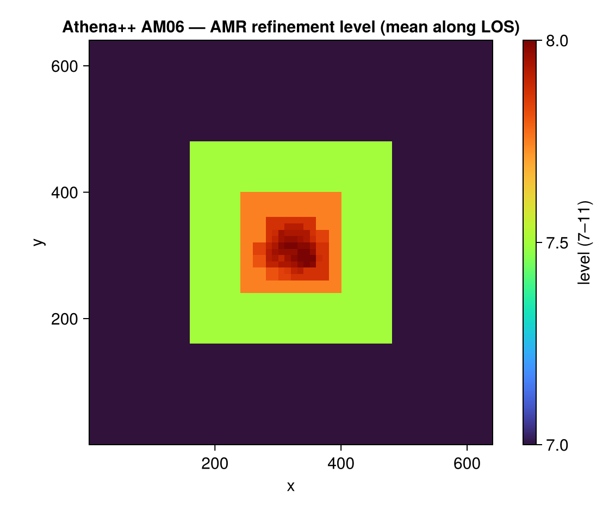

Reading Athena++ data (experimental)
Mera's analysis layer is code-blind: it works on a generic uniform/AMR cell list, not on RAMSES file formats. This page adds a frontend for the Athena++ code that reads an Athena++ HDF5 snapshot (.athdf) into the same Mera structs, so getvar, projection, subregion, filterdata, pdf, clumpfind and the rest run on Athena++ data unchanged.
3-D Cartesian, hydro and cell-centred MHD fields. AMR is supported, each Athena++ MeshBlock carries a level and a logical location, which map onto Mera's level/cx,cy,cz convention. The root grid must be a power of two per axis. Athena++ data are in code units; supply the run's CGS units for physical conversions (see below).
Usage
The normal getinfo / gethydro entry points auto-detect Athena++ from the .athdf file, nothing special to call:
using Mera
info = getinfo(5, "/path/to/athena/run") # finds run/*.00005.athdf, simcode = "Athena++"
gas = gethydro(info) # a HydroDataType in Mera's cell convention
# now the whole analysis layer works unchanged:
projection(gas, :sd, :Msol_pc2)
filterdata(gas, Above(:rho, 100, unit=:nH))
clumpfind(gas, ThresholdFoF(:rho; threshold=1e2, threshold_unit=:nH, linking_length=0.2))You can also call the frontend explicitly with getinfo_athena / gethydro_athena (e.g. to pass a direct .athdf path).
Loading a spatial sub-region
gethydro honours the RAMSES spatial-window arguments xrange/yrange/zrange (with center and range_unit), so you load only the part of the box you need:
# central 10 % box, fractions of the box relative to its centre
gas = gethydro(info; xrange=[-0.05, 0.05], yrange=[-0.05, 0.05], zrange=[-0.05, 0.05],
center=[:bc], range_unit=:standard)
# or a physical window once units are set (see "Units" below)
gas = gethydro(info; xrange=[-200, 200], center=[:bc], range_unit=:pc)This is the leaf-cell analogue of the window in Athena++'s own reader and in yt, the upstream tools whose behaviour Mera's selection mirrors. See Reference readers below. Because Mera keeps the leaf cells (each point covered by exactly one cell at its finest level), a spatial window is an exact, hole-free filter; the returned object records it in gas.ranges. Resolution/level is chosen later at analysis time (projection(…, pxsize=…)), not at load, a level cap would leave gaps, since no coarse data sits under a leaf.
The window also prunes I/O: only the MeshBlocks whose bounding box intersects the box are read from the .athdf file (the cells are then exactly clipped), so a sub-region touches only the blocks it overlaps. Loading the central 10 % of the AM06 sample reads 1554 of its 3424 MeshBlocks; a smaller window reads proportionally fewer, so a sub-region costs a fraction of the full snapshot in both time and memory. A full-box load keeps the fast single-read-per-dataset path.
Data is loaded per type, exactly as for RAMSES, but only what the code wrote exists: an Athena++ snapshot is hydro + cell-centred MHD only (no gravity/particles), so you call gethydro and there is nothing for getgravity/getparticles to read.
Worked example: the yt AM06 sample
A good way to see the frontend on real data is the AM06 snapshot from the yt sample-data collection, a Cartesian AMR MHD run (128³ root grid + 4 refinement levels, 3424 MeshBlocks of 16³ = 14,024,704 cells, with both a prim and a B dataset). getinfo auto-detects it from the .athdf file and prints the overview:
julia> info = getinfo(400, "/data/athena_AM06/AM06");
Code: Athena++
output: 400 time: 4000.0 [code units]
root grid: 128³ (level 7), MaxLevel 4 ⇒ levels 7:11, boxlen = 4000.0
MeshBlocks: 3424 variables: (rho, p, vx, vy, vz, bx, by, bz)
-------------------------------------------------------The AMR hierarchy lands in levelmin:levelmax = 7:11, and the MHD fields appear as :bx,:by,:bz alongside :rho,:p,:vx,:vy,:vz. Loading and projecting is then the ordinary Mera workflow, here the log column density along each axis:
gas = gethydro(info) # 14,024,704 cells, in Mera's cell convention
projection(gas, :sd, pxsize=[0.004, :standard], center=[:bc], direction=:z) # column density, face-on
MHD analysis
Because the B-dataset is read into :bx,:by,:bz, the full magnetic getvar set (:bmag, :pmag, :beta, :v_alfven, :mach_alfven/:mach_fast/:mach_slow) and vector projections work on Athena++ data too.
Magnetic-field streamlines over the column density come from a vector projection of the in-plane field. Note this is the mass-weighted field, so the streamlines trace field morphology, not a flux-rigorous line integral (a small box-car smoother tidies the turbulent field into clean lines):

A density–|B| phase diagram is just getvar on the loaded cells plus a mass-weighted 2-D histogram, and it recovers the expected flux-freezing scaling (|B| ∝ ρ^~2/3) across ~6 decades in density, a real physics result extracted entirely through Mera's code-blind analysis layer:

AMR refinement map
The cell :level is a projectable quantity, so a volume-weighted mean level along the line of sight maps where the grid refines, for AM06 it draws the nested MeshBlock hierarchy as concentric squares tightening onto the dense core (levels 7 → 11):

All figures on this page are regenerated from the fixture by docs/make_reader_figures.jl.
Units
Athena++ writes data in code units and does not store CGS scale factors, so by default the run is treated as dimensionless (unit_* = 1). Pass the run's CGS unit_length / unit_density / unit_velocity for a dimensional run and every getvar/projection unit conversion becomes physical:
# e.g. UNIT_LENGTH = 1 kpc, UNIT_DENSITY = m_p, UNIT_VELOCITY = 1 km/s
info = getinfo_athena(5, "/path/to/run"; unit_length=3.086e21, unit_density=1.67e-24, unit_velocity=1e5)
getvar(gethydro(info), :x, :kpc) # now physically correctVariable names
Athena++ VariableNames are mapped to Mera's canonical symbols: rho→:rho, press→:p, vel1/2/3→:vx/:vy/:vz, Bcc1/2/3→:bx/:by/:bz (and the conserved-variable names dens, mom1…, Etot). Unmapped names pass through as-is.
How it maps onto Mera's grid
The one thing that must be exactly right is the cell-coordinate encoding. A MeshBlock at Athena level L with logical location (l1,l2,l3) and block size (nx1,nx2,nx3) contributes cells with
level = log2(RootGridSize) + L
cx = l1·nx1 + a # a = 1…nx1, 1-based index on the level-L cell lattice(and likewise cy, cz), the same 1-based level-lattice indexing the RAMSES/PLUTO readers use, so off-axis projections, profiles, subregions and movies are all correct. This contract is verified data-free in test/57_athena_reader_tests.jl, which synthesises tiny .athdf files and checks that a value written at a known cell reads back at the right (:level,:cx,:cy,:cz).
Reference readers
This frontend is built to agree with Athena++'s own tooling and the wider community readers, which are the origin of the .athdf format and its selection semantics. The test suite pins Mera's side of that agreement by writing .athdf files in the documented schema and reading them back, so a misread dataset or a shifted block index fails the suite:
athena_read.py, the official reader shipped with Athena++ (athena/vis/python/athena_read.py), whoseathdf()function reads a snapshot and supports a spatial window (x1_min/x1_max/…) and a level argument. Mera's load-timexrange/yrange/zrangeis the leaf-cell analogue of that window. See the Athena++ wiki.- yt: its
athena_ppfrontend reads.athdflazily through data objects (ds.box,ds.sphere,ds.r[...]), touching only the MeshBlocks a region intersects. Mera's spatial selection mirrors that region-selector behaviour on the leaf-cell list. The AM06 sample used above comes from the yt sample-data collection.
Athena++ data are dimensionless (code units) and carry no CGS factors, exactly as both readers above assume, supply the run's units explicitly (see Units).
See also
- Multi-code support, the code-blind architecture and the sibling readers.
getvar,projection,subregion,filterdata,clumpfind, the analysis that runs on Athena++ data.
Function Reference
The Athena++ entry points, reached automatically through the generic getinfo and gethydro once the output has been recognised.
Mera.getinfo_athena — Function
getinfo_athena(output::Int, path::String; unit_length=1.0, unit_density=1.0,
unit_velocity=1.0, verbose=true) -> InfoTypeRead Athena++ HDF5 (.athdf) snapshot metadata for output in path (a directory holding the …NNNNN.athdf file, or the file itself) into a Mera InfoType (simcode = "Athena++"). The AMR level range maps to levelmin/levelmax (levelmin == levelmax ⇒ uniform grid). Feed the result to gethydro.
Units. Athena++ data is in code units; supply the run's CGS unit_length/unit_density/ unit_velocity for physical :kpc/:Msol/… conversions (defaults treat the run as dimensionless, see getinfo_pluto for the same convention).
Mera.gethydro_athena — Function
gethydro_athena(info::InfoType; xrange, yrange, zrange, center, range_unit, verbose=true) -> HydroDataTypeRead an Athena++ HDF5 snapshot described by info (from getinfo_athena) into a HydroDataType with columns (:level, :cx, :cy, :cz, <vars…>) in Mera's AMR convention, so the analysis layer works on it unchanged. Each MeshBlock's cells are placed on the level lattice via its LogicalLocation and level.
xrange/yrange/zrange (+ center, range_unit) select a spatial window at load time (the leaf-cell analogue of Athena++'s own athdf(x1_min=…, x1_max=…)), exactly as for the RAMSES gethydro; the returned object's ranges records it.